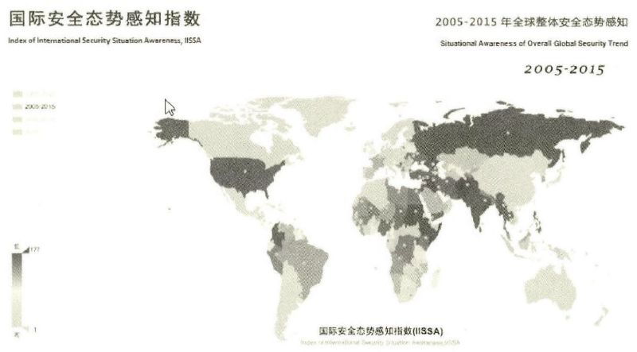

收录于合集
简
宋 伟
中国人民大学国际关系学院教授
摘 要
作为社会学科研究的国际问题研究需要回答四个方面的问题：描述性的问题、解释性的问题、预测性研究和对策性研究。严格遵循社会科学研究的程序，这四个方面的国际问题研究就会表现出一些共同特点：客观性或者说可重复性、规律性或者说普遍意义、简约性或者说主次分明。大数据研究能够让决策者获得更加全面、充分的信息，从而采取更加具有针对性的政策；在进行描 述性的国际问题研究时，大数据可以起到十分突出、甚至是革命性的作用；在解释性的问题方面，大数据的长处是用来发现相关性，而不是做出因果解释；大数据还可以发现有价值的解释性问题；大数据在预测和对策研究方面的优势十分明显，它所发现的规律性现象不仅可以用来预测，也可以帮助人们做出选择。大数据应用到国际问题研究领域也有其局限性，有些局限性是这一方法本身所具有的，例如不能进行因果机制的分析和解释；有一些是国际问题研究领域所具有的，例如“成本—收益问题”、数据主权问题等。在国际问题研究领域，大数据并不适合用于做战略研究，而更多适宜于对国际发展态势的宏观描述以及为具体的外交行为提供精准的指导方案。总之，大数据有助于发现更全面和客观的事实、提出更多规律性的问题以及帮助研究进行预测和做出选择，但大数据自身不能完成整个解释的过程，需要研究者进行专业的因果机制的分析和解释。
关键词
大数据 国际问题研究 国际安全态势
一般认为，大数据（BigData）是指“用现有的一般技术难以管理的大量数据的集合”。随着互联网的普及，智能手机、云计算和传感器技术的日益进步，以及存储设备变得更加廉价，政府、企业和社会正在积累着难以想象的海量数据。 通过新的数据处理技术，可以对这些庞大的数据进行分析，从中获取到有价值的信息。大数据具有四个方面的基本特征：大容量（Volume）,即信息具有海量的规模，已经从TB量级上升到PB量级；多样性（Variety），即信息的形态十分多样，包括文字和日益增多的视频、照片、网络日志、交易记录、传感器数据等非结构化的数据；高速（Velocity）,即数据产生和更新的速度非常快，往往需要进行实时的分析、处理和存储；价值（Value）低密度性，即对这些庞大数据的处理，可能最终获得的有价值的信息与总量相比只是很小一部分。大数据已经被广泛运用于商业领域，并促成了像亚马逊（Amazon）、谷歌、脸谱（Facebook）这样的互联网企业的巨大成功。通过对全部数据进行分析和处理，企业既可以了解其中存在的某些高频率相互关联的规律性现象，也可以针对性地了解不同地域、社区乃至个人的偏好，提供“精准”的商业信息推荐和诱导。那么，当运用到国际问题研究领域时，大数据能发挥什么样的作用呢？是否和商业、社会生活领域 一样，大数据将改变我们研究国际问题的方法、思维方式？
本文之所以使用国际问题研究而不是国际关系研究的概念，是希望比较严格地区分国际关系研究和外交政策研究这两个不同的子领域。国际关系研究针对的是国家间的互动关系及其结果，例如，两国在经济上的相互依赖能否带来它们之间的和平？这些互动及其结果肯定不仅仅取决于其中的一些国家的实力和意愿， 而是取决于双方乃至整个地区和国际体系的状况。因此，国际关系理论一般来说是体系层次的理论，强调某一体系要素对于国际互动和国际结果的决定意义。外交政策研究针对的是外交政策的形成过程以及应该采取什么样的外交政策。因此, 外交政策研究不仅要考察国际体系对一国行为空间的制约，还需要考察国内政治（(包括领导人因素）对一国行为方式的塑造。由于需要同时结合国际体系层次和国内政治层次，外交政策研究进行理论化的难度要更高，长时间停留在外交政策分析的阶段。大数据在应用到国际问题研究时，在国际关系研究和外交政策研究两个子领域中所能发挥的长处也有所不同。因此，在接下来讨论大数据对它们的意义和局限时将会适当做一些区分。本文所提到的意义，并不仅仅是指国际问题研究使用大数据的重要性，更准确地说，是指大数据能如何具体地在社会科学研究的四个方面帮助、改进现有的国际问题研究。
作为社会科学研究的国际问题研究
一般认为，社会科学是以社会现象为研究对象的科学。它的任务是研究与阐 述各种社会现象及其发展规律。到目前为止，不管学者们是否认同美国学者斯 坦利•霍夫曼（StanleyHoffmann）教授的“国际关系学是一门美国的社会科学” 的说法，绝大多数国际关系的主流学者认同国际问题研究是社会科学性质的研究，力求获得客观、准确的知识。按照丹尼尔•利特尔（DanielLittle）的观点，“科学研究的目标在于创造有关自然和社会现象的知识。这一目标使得科学研究非常关心真实性，关切信念评估（BeliefAssessment）的理性标准以及坚信信念评估的标准化有益于发现真理。”科学知识只是教给我们如何“从源头上理解政治、艺术、文学和社会现象”，就像医学不回答生命是否有价值、什么样的生命有价值这样的问题。
不管是国际关系研究还是外交政策研究，它们本质上都属于社会科学研究的范畴。它们所研究的对象，是丰富多彩的国际关系和外交政策现象以及这些现象背后可能存在的规律并对其做出理论性的解释。严谨、系统的国际关系理论的出现，意味着作为一门独立社会科学的国际关系学科的形成。正如两位国际关系学者所指出的：“我们的首要结论是，国际政治研究的进步——包括在政策意义方面 ——依赖于更严谨的理论和更系统的实证检验，而不是相反。这个结论肯定会引起争议，因为许多关于国际关系政策意义的评估都支持中层理论、偶然性假设和对个别案例做认真研究之后的经验总结。” “只有当国际关系进行科学探讨的时候，
它才可能提供某些具有长远价值的东西，而不仅仅是基于消息灵通的见解。”而在外交政策领域，系统性的外交政策理论——诸如进攻性现实主义、防御性现实主义和新古典现实主义——正在创造和发展之中，外交学这一门学科还没有完全成熟。从社会科学方法论的角度来看，国际关系研究和外交政策研究都是要回答如下四个方面的问题。
第一个方面的问题是描述性的问题。描述性研究是社会科学研究的一部分，事实的准确研究是回答其他所有科学问题的基础。事实包括物质性事实和社会性事实。物质性的事实指向的是自然世界，例如一国所拥有的工业产值、疆域面积、人口以及核武器的数量等等。通常我们会采用数量化的方式对它们进行比较准确的描述。但由于数据信息的不及时以及统计能力的局限，这些数量化的描述实际上只是“大体准确”。社会性事实指向的是社会实践、社会制度这样一些事实，例如第一次工业革命、婚姻制度、民族主义情绪、国际货币基金组织的决策机制等等。对这些社会性事实，我们会同时使用定性和定量的方法进行描述。这些社会事实很难进行完全的量化，而且往往更倚重定性的方法。例如，当我们描述发生在18世纪英国的第一次工业革命时，可以从冒着浓浓黑烟的蒸汽机车、大工厂、纺织机器的图片以及文字描写中获得直观、生动和相对完整的认识。当然，定量描述仍然非常重要。对于国际问题研究者来说，不仅面对大量的物质性事实, 也面对更多的社会性事实，很多用传统的方法难以进行量化分析，因此只能是 “大体掌握”和“大体准确”。例如，在国际体系的无政府状态下，尽可能准确地衡量和描述各国的国家实力（NationalPower）并进行对比是所有国际问题研究 者必须要完成的任务。虽然在科学技术如此发达的今天国家实力基本上是一种物质性的事实，但仍然包含着十分重要的社会性事实——例如国民士气、政府效率和民众对政府的支持度等。对于国民士气这样的因素，用传统的方法很难进行大样本分析，更不用说“全样本分析”。
第二个方面的问题是解释性的问题。作为一种社会科学研究，国际问题研究 涉及规律性现象和偶然性现象这两种解释对象。对于偶然性的现象，可以采用排除法或者直接提出因果假设的方式进行解释。例如，如果我们要回答为什么奥巴 马取消了在2016年东盟峰会期间与菲律宾总统杜特尔特的会晤，那么就可以采取 简单的排除法。是否因为美国和菲律宾政府事先没有商量好？是否因为奥巴马或 者杜特尔特临时没有参加峰会？如果都不是这些原因，那么很自然人们就会归因于杜特尔特在峰会前夕对奥巴马的辱骂。而对于规律性的现象，则一般采用假设演绎法来进行解释，即基于对基本事实的判断以及现有的一些理论基础，提出比较具体的假设或者分析框架，然后通过比较分析、调查统计等方式来证实或者 证伪这些推论。获得具有普遍意义的规律以及解释这些规律，是社会科学研究的 主要任务。正如马克斯•韦伯（MaxWeber）所指出的，社会科学研究的第一个重要特征是研究的客观性和规律性。韦伯在《社会科学方法论》一书中说道：“如果历史学家的因果认识是把具体的结果归源于具体的原因，那么，任何一个个别结果的有效的归源倘不应用‘规律学的’知识——即因果联系的合乎规则性的知识——就是不可能的。” 要完成解释性的任务，最重要的就是发现和论证现象背后的因果关系。哪些是自变量？哪些是主要变量、哪些是次要变量和中介变量？ 它们之间是如何有机结合在一起而导致了某种规律性现象的？因此，这一过程需 要创新性的假设构想、严格的逻辑论证、准确的事实检验，但首先在于创造性地 提出和构想一种可能存在的因果关系。
第三个和第四个方面是预测性研究和对策性研究。这两种研究本质上都建立 在描述性和解释性研究的基础之上。如果没有对事物发展内部因果关系的把握， 那么就很难做出准确、长期的预测。当然，由于国际问题领域内的现象具有客观 性和规律性，一定时期内这些要素并不会发生变化，因此有些预测并不需要基于对内在因果关系的透彻把握。例如，生活在19世纪的政治家和外交家，可能很自然地以势力均衡的方式来预测其他大国的行为——不过度削弱战败的大国、弱国联合起来制衡潜在的争霸国。但是，随着民族主义和自由主义政治意识形态的兴起，各国政治家的对外行为日益受制于国内政治，势力均衡的机制也就运转不灵了。同样，对策性研究一般来说也是基于现象背后的因果关系，有针对性提出外交战略和政策主张。但是，一般来说，非常具体的对策性研究涉及国内政治和领导人个人，传统的研究方法很难获得充分的细节信息。因此，从社会科学研究 的角度来说，传统的对策性研究一般限定在外交战略，具体的政策问题还是相关 的政府机构更为熟稔。
这四个方面的国际问题研究，如果严格遵循社会科学研究的程序，那么就会 表现出一些共同的特点：（1）客观性或者说可重复性，即力求事实描述、逻辑展开和论证过程的准确性。依据同样的条件，其他学者应该可以获得同样的结果; （2）规律性或者说普遍意义。不管是对于现象的描述，还是进行解释或者预测， 最终我们都希望获得一些具有普遍意义的知识，而不是纯粹的个案研究；（3）简约性或者说主次分明。在进行描述、解释、预测乃至提出对策时，人们都希望获得条理清楚、重点突出的印象。这一点在完成解释和预测任务时尤其重要。一个事物的发展肯定同时受到诸多因素的影响。因此，只有能分辨其中的主要因素和次要因素，了解其内在的因果机制，才能把有限的资源用在解决主要矛盾上。
大数据应用于国际问题研究的意义
随着数据搜集和处理技术的进步，“大数据”开始被国际问题研究者所重视和 讨论，尤其是在外交政策研究领域。学者们指出，大数据研究由于其自身所具有的特性，能够让决策者获得更加全面、充分的信息，可以采取更加具有针对性的政策。例如，通过对大量社交网络的分析，可以发现不同地区的合适产品营销策略、对可能出现的不稳定事件进行预警、发现恐怖主义分子的行动路径等。但到目前为止，还没有十分系统地探讨大数据对于国际问题研究有什么理论和方法上的意义。一般来说，倡导大数据研究的国际关系学者更多把大数据的运用作为一种方法和工具，并不认为将会出现一种国际关系的“大数据理论”。基于第一节所提出的国际问题研究的四个方面和三个特点，这里逐一分析大数据应用于国际问题研究领域所能发挥的作用或者说所具有的意义。
在进行描述性的国际问题研究时，大数据可以起到十分突出、甚至是革命性的作用。传统的定性方法和定量方法从根本上来说无法做全景描述和全样本的统计，但是大数据可以让我们对整个世界正在发生的各种现象有一个宏观的把握， 例如人口在全球的分布和迁移、过去十年间全球各地的气候变化、在全球主要社区中互联网用户所关心的问题和主要观点等。大数据不仅包括文字数据，也包括越来越多的智能传感器、视频设备所提供的自动或者人工数据，例如通过天文望远镜拍摄的图像、视频数据；卫星云图数据；工业设备、汽车、电表上的数码传感器测量和传递的有关位置、运动、震动、温度、湿度乃至空气中化学物质变化 的数据。这些数据通过可视化的方式展现出来，能够让我们对全世界正在发生 或者已经发生的事情有十分清晰的了解。例如，通过电力系统、铁路系统提供的大数据，人们可以感知到不同地区经济发展的速度和态势。同时，当所要针对的领域有所缩小时，大数据的手段则能够提供十分深入、详尽的数据分析，例如某 一地区居民的购物习惯、最近所讨论的主要问题及其看法，从而进行精准的商业 和政治营销（即“公共外交”）。
大数据的这种海量信息搜集和处理方式，十分有利于国际关系研究者获得 全面的有关物质性事实和社会性事实的信息。对于现实主义国际关系研究者来说， 他们往往希望获得更多有关国家实力的信息，而国家实力则涉及地理、经济、军事、社会凝聚力等多方面。以前的国家实力评估只能停留在常识分析、选取主要实力要素这些“大体准确”的阶段。而通过大数据的方法，人们可以选取足够多的与国家实力有关的事实进行系统的分析。对于自由主义国际关系研究者来说，他们希望了解全球经济一体化的具体情况，这些通过人口、商品、信息和资本全球流动的大数据可以获得更加直观、准确的认识。而对于建构主义国际关系研究者来说，大数据更能帮上他们的大忙，因为以前许多不好统计的社会性事实都可以获得足够的数据，例如传统上只能通过抽样调查的方式来了解某一国家国民对他国的认同，但现在通过网络的方式可以获得全面、及时、相对准确的信息。对于外交政策研究者来说，大数据的方法同样可以发挥十分重要的作用。“大数据 ……可以在短时间内高速处理百万维度以上的数据并使数据以动态可视化形式展现，这就使得外交决策有可能确立在充沛数据分析和动态感知的基础之上，以前那些被忽视、被遗弃或不能进行技术分析的信息有可能会被重新发掘，并有机会进入外交决策过程影响决策结果，由此导致传统外交思维、外交理论乃至外交战略被不同程度地修正、改造、完善或重塑。”
在解释性的问题方面，大数据研究的一些代表性人物认为，大数据的长处是用来发现相关性，而不是做出因果解释，很多时候也没有必要做出因果解释。“在大数据时代，我们无须再紧盯事物之间的因果关系，而应该寻找事物之间的相关关系，这会给我们提供非常新颖且有价值的观点。相关关系也许不能准确地告知我们某件事情为何会发生，但是它会提醒我们这件事情正在发生。在许多情况下， 这种提醒的帮助已经足够大了。如果电子医疗记录显示橙汁和阿司匹林的特定组合可以治疗癌症，那么找出具体的致病原因就没有这种治疗方法本身来得重要。 同样，只要我们知道什么时候是买机票的最佳时机，就算不知道机票价格疯狂变动的原因也无所谓了。”对外经贸大学国际关系学院的董青岭副教授也认为，大数据时代的外交政策研究“试图超越研究变量之间的因果解释，重在探究那些宏观上能引起变化的数据之间的关联关系，与现实相脱节的决策偏差。”事实上， 相关关系可以分为两种。一种是没有因果关系的相关关系。例如，假设大数据帮助我们发现，提前五天的时间通常能买到比较便宜的火车票，提前五天和便宜的火车票之间并没有因果关系，只有相关关系，我们需要进一步解释为什么会出现这样规律性现象。另外一种相关关系自身可能本质上是一种粗糙的因果关系。例如，假设大数据显示，两极体系比多极体系或者单极体系更加稳定，那么在两极和体系稳定之间是存在一种需要解释的因果关系的，只是需要进一步的因果机制的解释。从这个角度来说，大数据在解释性研究方面需要研究人员的帮助，但并不是一点解释能力都没有。
不仅如此，大数据还可以为解释性研究提供重要的帮助，那就是发现有价值的解释性问题。一直以来，国际关系和外交政策的研究领域都受困于规律性问题过少的状况。例如，结构现实主义大师肯尼思•沃尔兹就曾经写道，他的理论只是用来解释少数重大问题。这些少数重大问题包括战争为什么会反复发生、什么样的国际体系最为稳定。在外交政策领域，同样也只存在少数规律性的现象， 例如制衡、追随和联盟等。因此，在国际问题研究领域，存在着可以研究的核心问题，但是缺少更加丰富的反复出现的规律性现象。大数据的使用，可能可以发现更多、更复杂的规律性或者高相关性的现象。有些高相关的现象只是假问题, 例如石油的分布和伊斯兰国家的分布具有高相关性，但是本质上两者之间没有任何必然的联系。但有些高相关的规律性现象可能具有进行理论解释和理论创造的价值，例如智能手机的普及与劳动生产率的降低之间如果存在一种高相关性的话， 那么我们就需要解释为什么智能手机的使用会导致这样一种后果，是因为人们缺乏自制力，还是因为过多的信息造成了太多的负担？类似地，如果说大数据显示， 在不同国家，人口的自由流动导致了更多的恐怖主义袭击，或者说国内物价的波动导致了具有攻击性的对外政策，那么就需要进行认真的因果分析，阐明内在的 因果机制。
大数据在预测和对策研究方面的优势十分明显。在进行预测的过程中，大数 据可以采用从结果倒推原因的方法，即依据某种事态可能引发的种种结果，最终倒推出事态的严重程度，并与历史上的经验相验证。然后，基于“惯性定律”——假设短期内事物的发展态势不会有翻天覆地的变化——那么，就可以直 接运用这些规律性的现象来进行预测和决策。国际关系学院《国际安全研究》编辑部和对外经贸大学国际关系学院大数据国际关系研究中心联合发布的《国际安全态势感知指数2016》是一个运用大数据进行国际关系预测研究的很好案例。这 一报告通过选取66个相对重要的指标进行分析筛选，确定了 27个具有高相关性的指标（军费开支、人口增长、死亡率、武器进口等），最终确定这些指标通过其特定的系数关系可以反映出一定时期的国家安全态势。这一指标模型本质上是一 种复杂的变量模型。在此基础上，依据“惯性定律”，基于过去一段时期这些变量的发展态势，就可以推测出国际体系的一些发展大趋势。例如，这一报告在总结中认为，“从全球层面来看，长期的国际安全状况较差，中期的安全状况虽有所改善，但短期状况又呈现负面化，但幸运的是2015年以来的国际安全状况又开始有所改善。但同时，如果从发展趋势来看，我们可以发现呈现正面状态的国家数量在逐渐增多，负面状态的国家数量不断减少，这说明全球层面的国际安全态势在不断向好的方向转变，我们对国际安全的未来应该充满信心。”
大数据所发现的规律性现象不仅可以用来预测，也可以帮助人们做出选择。 例如，当我们知道提前多少天购买机票往往比较便宜，那么我们直接按照这一规律去预期和购买就好了；如果我们知道当飓风天气来临时人们习惯于购买蛋挞， 那么商家把蛋挞摆在其他飓风天气用品旁边即可。同时，大数据具有实时性、相对客观和全面的特点，因此可以发现很多不为人所关注的“蛛丝马迹”，从而有可能预测新的现象的出现。例如，依据人们对与“流感”相关词条的检索，疾控机构可能更早警觉到流感爆发的风险。对于外交政策研究来说，大数据在采取更加精准的政策应对方面具有更加明显和独特的优势。例如，传统的外交政策研究往 往局限于大国和外交战略，不太可能精细到对每一个国家都做详尽分析并提出相关对策。传统上，“小样本抽样调查、历史经验知觉感悟与学术研究因果逻辑推演是人们洞悉这个纷繁芜杂世界的主要决策基础，透过小样本调研与结构化数据分析，获得的知识多是关于我们所生活之世界的线性因果结论，以至于很多时候世界的复杂性和不确定性被刻意忽略了。”但是，在大数据的帮助下，外交政策制定者们可以对与其他国家关系的一些新趋势进行预警，也可以采取更加精细化的 对外政策，包括公共外交。通过对推特（Twitter)、谷歌、脸谱、微信、微博等新 媒体平台信息的抓取和计算，政治研究者可以对利益攸关人群进行精细划分、对 政治态势进行整体感知、对危机进行预警和预测，从而有助于外交科学决策和精准政治营销。
大数据应用于国际问题研究的局限
对作为一门社会科学的国际问题研究来说，大数据的应用的确能带来许多重大而积极的帮助。研究者们可以获得更加充分和及时的数据、信息，一些以前不能研究或者难以研究的问题成为可能研究的问题。有关国际关系的各种大数据也可能提炼出一些规律性的现象，从而为理论的创造和发展提供有价值的问题。同时，大数据的实时性、全面性也可能使我们关注社会发展的方方面面，以及特定人群的蛛丝马迹，从而提早应对。因此，大数据的确为国际问题研究提供了一种新的方法和途径，扩大了国际问题研究的视野，为推动这一学科理论和知识的进步提供了新的强大的动力。在充分认识到大数据应用于国际问题研究的作用和意义的同时，本文也试图对局限的方面做一些初步的分析。
毫无疑问，大数据的研究方法自身就具有一些不可避免的局限，这些局限在应用到国际问题研究领域时同样存在。总的来说，虽然大数据能够搜集和处理海量的数据，向我们展现了一个相对完整的世界，但是数据的规模太大，本身可能就造成数据价值的递减效应。换言之，在我们处理现实问题时，我们一般不需要“完全理性”，而只需要“满意理性”。例如，当我们考察中美经济关系的相互依赖时，一般来说只需要举出进出口贸易、生产分工、投资金融等方面的基本数据即可，并不需要呈现出所有企业在两国间生产和投资分工布局的情况。过多的数据反而可能会造成混乱，干扰到有价值信息的挖掘。对于国际关系研究者来 说，他们在考察国家间的实力分配时，事实上并不需要清楚所有有关国家实力的数据。因为即便我们知道了国内生产总值（GDP)、土地面积、工业产值、人口等各方面的数据信息，但这些数据之间本身存在相互重叠的关系，导致分析起来过于复杂。研究者完全可以简单地列举出一些最重要的方面，获取相关的基本数据， 从而得出一些“大体准确”的认识。这就够用了。我们只需要知道现在是单极结构、两极结构还是多极结构，并不需要知道它内部十分精确的力量对比结果。因此，“很多情况下，一个经验丰富的决策者的直觉也许要比客观数据可靠得多。数据是会说谎的，一个数据的可靠性与统计方法、样本选择等一系列因素有关，初期的差之毫厘没有被察觉或者纠正的话，计算到最后也许会导致结果与真相谬以千里，这无关乎数据的体量大与小、维度多与少。即便数据都是客观真实的，但是如果选择了错误的数据类型来做判断依据，那么做出来的决策仍然会出现失误， 严重的甚至南辕北辙。”因此，即便我们通过使用大数据获得了用复杂方法处理复杂现象的能力，在研究的过程中仍然需要“化繁为简”，关注那些更加重要的因素，提高研究的效率和准确性。否则，即便我们通过大量的数据材料获得了大量的数据结果，看起来很精确，但其实并不准确。
大数据自身所具有的另一方面局限在于其不能自己进行完整的解释，而只能停留在相关性的层次。尽管对相关性的发现可能意味着好的理论问题、意味着发现了某种粗糖的因果关系，也可能用来做一些预测和决策分析，但是对于作为社会科学研究的国际问题研究来说，有关因果机制的透彻解释仍然是最核心、最重要的工作。只有清楚了解规律性现象背后的因果机制，我们才能对这一现象有了真正透彻的认识。如果用通过经验归纳法得出的规律性结论来解释规律性现象本身，这是一种同义反复；现象本身并没有得到真正的解释。例如，在正常的气压下，水超过100摄氏度会变成水蒸气。这似乎可以用来说明为什么烧开的水不断 变成水蒸气，但并没有让我们真正理解其中的内在原由，只有水分子的理论才会告诉我们这些。尽管我们知道物价的波动可能反映了国内的武装冲突状况，但是我们仍然不清楚武装冲突状况是如何传递到物价的波动上的，以及两者之间究竟存在什么样的因果机制。只有当我们了解其中的因果机制之后，我们才能使用物价的波动来推测国内是否发生了武装冲突，或者是否可能发生这样的冲突。如果没有对其中因果机制的透彻了解，我们只能进行没有把握的预测，也不会有合理的战略应对。
国际社会和国内社会都是纷繁复杂的整体，导致某个自然和社会现象的背后原因可能是无限多样的。在这样一种认识的基础上，科学研究着眼于解释这些规律性现象背后的主要因果关系。用唯物辩证法的话来说，是通过揭示某个领域内的主要矛盾，来解释领域内一系列现象背后的本质。例如，国际关系学者在谈到一战前大国关系之间出现的许多事件时，总会把它们和英德关系这对主要矛盾联系起来；当我们谈到欧洲一体化的进程时，常常会关注美国的政策和法德之间的互动。道理很简单，在国际社会缺乏一个强有力的中央政府来实施法律、管理国际事务的前提下，大国由于军事和经济实力超群，总会在谈判、外交和战争中占据更突出的角色，并常常起到决定性的作用。这就是科学理论的指引作用。正如 肯尼思•沃尔兹所界定的，“理论是对规律的解释”。一种理论是对某种行为领域的组织及其各个组成部分间相互关系的描述。一种理论要说明某些要素比另外一些要素更为重要，并且要详细阐明各种要素之间的相互关系。对一种规律性的现象进行透彻的说明，指出它存在的前提条件、变量关系和内在机制，正是人们创造性地进行解释性研究的任务，也是人类“智慧”能力的体现。因此，尽管大数据能够依据规律性的现象进行一些预测，但本质上来说，这种预测和应对都是有相当局限性的。人们或许能够用大数据来捕捉生活和商业中的机会，但是对于国际问题研究来说，仅仅掌握相关性肯定是不够的。
在运用国际关系研究和外交政策研究方面，大数据可能还会因为具体领域的原因表现出其他方面的局限性。由于国际关系研究和外交政策研究是一种以国家为行为主体的研究领域，因此所涉及的因素虽然多，但是大数据发现全新国际关系规律的可能性并不髙。在国际关系领域，很难想象通过使用大数据，我们可以发现某些颠覆性的规律，例如天气变化导致了战争的反复出现。尽管天气可能是战争爆发时间点的影响因素之一，但是战争的爆发首先取决于国家的决策。人们可以通过人口的迁徙、地球上夜晚灯光的分布感受到南北差距，但是这些只是对现有的宏观国际体系的更加生动、可视化的认识。大数据可以让我们更加动态、 可视化观察国家间实力对比的变化，但是国际结构仍然是我们观察和解释国际关系的基本要素。同时，国家这样一种政治结构的存在，使得大数据能够观察庞大个体动态的优点受到了限制。不管个体有什么纷繁复杂的看法，他们的观点通过 现有的表达渠道输人到政治结构之中，这一表达的过程本身就已经被再塑造了。 因此，从理论的角度来说，大数据对于国际关系理论的发展可能不会起到太大的作用。不过，在国际关系研究中，一些成果可能具有反复使用的商业价值。例如，在对国际安全动态进行系统的评估后，不同的公司、个人都可能用它来作为自己投资、旅行的依据。这样的一些评估和预测研究，从“成本一收益”的角度来看 是十分有价值的。
在外交决策领域，大数据的应用同样面临着“成本—收益”的问题。通过使 用大数据对某一具体的政策事件做精确分析，的确有可能产生十分精准、完美的对外行为，但是这一次行为完成之后基本上就失效了。同时，外交政策本质上还是取决于两国之间的战略关系。而战略关系的确定，很多时候不需要依靠大数据就能看得很清楚。外交决策领域的这些特点与商业领域是很不一样的。的确，在商业领域，越来越多的企业发现自己通过业务交易产生的“废弃数据”成了宝贵信息，例如电子商务企业所掌握的用户基本数据和交易信息、物流企业所掌握的产品运输信息和路况信息等。对于新的知识经济而言，大数据是一种不断产生、取之不尽的资源。这是因为对现有交易数据的反复使用可能会产生源源不断的新收益。而在外交政策研究中，这些数据的反复重新使用一般情况下并不会产生这样的新收益，即使有效果也不大，因为外交政策受制于国家间的战略关系。“在外交决策领域，任何对大数据的投入是难以直接产生商业利益的，只能说存在提高决策效率的潜在可能性，若要实现这种可能性还需要其他各种附加条件。因此, 对决策成本的顾虑会使决策者在面临大数据的诱惑时裹足不前。外交决策者习惯于使用传统的思维模式进行决策。他们宁愿通过情报机构搜集少量但精确的情报，也不愿意使用大数据技术获得全部数据。”
最后，不管在国际关系还是外交政策的研究领域，大数据研究可能都会涉及同样一个敏感的问题，就是数据的搜集与国家主权的关系问题。这一问题当然在商业和社会领域同样存在。商家可能希望通过重复使用以及分享数据来获得源源不断的收益，但这可能侵害到个人的隐私和其他合法权利。“我们在注册购物信息时明确点击同意了电商网站的数据采集条款，但这并不等于我们同步转让了我们有关自身信息的数据所有权。我们之所以同意电商数据收集条款，是因为只有提供准确信息才能方便电商投递商品并顺利完成此次交易，我们明确意思表示并实质授权的是个人数据有限次数（一次或多次）、有限目的（为顺利完成交易）的特定数据使用权，而不是数据所有权、处置权和收益权。”相比之下，国际问题研究领域的很多数据涉及国家安全，问题可能就更为严重，对这些数据如果通过非法的方式进行抓取可能会侵害到他国的合法主权，从而引发国家间争端。“即使存在着大体量的结构化和非结构化数据可供抓取，在国际政治领域各国出于国家安全考虑和公民个人隐私保护，也会设置重重法律门槛和技术障碍阻止数据在世界范围内的随意扩散。”中国和欧洲学者多认同数据主权（DataSovereignty）学说, 主张建立更为严密的数据收集法案和数据治理体系。美国学者大多倾向于更自由的数据搜集规则。表现在现实的国际关系中，“网络间谍”问题已经成为中美关系中的一个焦点问题，就表明大数据运用到国际关系和外交决策研究时需要十分谨慎。
案例分析：《国际安全态势感知指数2016》
国际关系学院《国际安全研究》编辑部和对外经贸大学国际关系学院大数据 国际关系研究中心联合发布的《国际安全态势感知指数2016》是到目前为止国内 运用大数据研究国际问题做得较好的案例之一。这一报告使用大数据的相关技术, 对 1995 - 2015 年这二十年（其中又细分为 1995 -2015、2005 - 2015、2010-2015 三个分析区间）的全球整体安全态势和各国安全指数做了一个数量化的分析，并 以可视化程度很高的形式展现出来。

图1 2005~2015 全球整体安全态势感知图
这里并不试图对《国际安全态势感知指数2016》报告的结果做分析和解释, 而是考察大数据应用于研究时的意义，即大数据是如何有助于进行国际安全态势 的分析和预测的。如前面所述，大数据的方法对于国际问题研究来说既有长处, 也有短处。《国际安全态势感知指数2016》至少在使用大数据的方式时比较好地做到了扬长避短。
首先，大数据有助于该指数报告较好地完成了描述性的任务。通常，安全是什么是说不清楚的，更被认为是难以量化衡量的，但环境安全与不安全是可以被感知的，并且这种感知是多方面的。正如地震到来之前青蛙会争相出洞、鱼儿会 争相跃出水面那样，通过无数历史案例和数据的总结，或许某种或某些指标的波动（如食品价格的上涨、耗电量的降低、能源进口量的增加、国际投资的减少等）与特定安全类型及安全烈度相关联对应。课题组一开始选取了海选了可能与安全形势关联的353个变量，精炼以后还剩余了 66个显著变量，然后经过进一步的关联度分析，确定了 27个相关性最高的最敏感变量。这些变量包括与国际和国内安全相关的方方面面，例如商品进出口、旅游人境人数、能源进口、军费开支等方面。如果不使用大数据技术的话，是根本无法获得如此之多的事实和数据材料的。 即便获得了足够的材料，也无法对27个变量同时进行处理，最后得出具有一定规律性的结果。尤其是考察到这一研究针对的是全球177个国家。因此，使用普通的方法，根本无法总结和描述出其中准确的相关性。课题组在完成这一任务时， 尽可能规避了大数据研究的一个局限，即盲目搜寻数据导致规模过于庞大、反而干扰有价值信息的发现。通过化繁为简，从353个变量减少到27个变量，最终能够通过机器比较有效地提炼出其中的规律性模型。
其次，这一报告最重要的意义不是对过去二十年的全球安全态势做了数量化的统计；事实上，对过去安全形势的统计可以直接考察得出武装冲突的相关结果。 这一报告最重要的地方在于通过大数据获得了有关全球和国家安全态势如何预测的模型，并且不同国家可能有不同系统的具体模型。课题组在这方面的思路就是前面提到的从结果倒推原因的方法。安全形势的变化肯定会有多方面的反应。通过选取27个最具敏感性的变量，考察它们以什么样的方式结合在一起能够最准确地反映当时的安全局势，从而获得其中的规律性模型。这27个最具敏感性的变量 ——例如人境旅游人数——并不是安全局势变化的原因，而是局势变化的结果。 但仅仅一个变量的变化不足以让我们推导出安全发生了什么变化。但是，通过相关性最高的哪些变量，考察它们在历史上以何种方式结合在一起能够最准确吻合当时该国或者该地区的具体安全局势，就可以通过计算机获得其中的规律性模型。 当然，这种模型可能也只是大体准确的模型。在此基础上，就可以结合惯性定律， 基于过去一段时期内这些敏感指数的波动情况，预测接下来一段时期内的该国或者该地区的安全局势。如前所述，这些总结和预测结果具有反复使用的价值，可 以为政府、企业和个人的海外行为提供一定的参考和借鉴。
最后，虽然《国际安全态势感知指数2016》所获得的规律性模型并不属于具 有因果关系的相关性——它是从结果倒推原因，但是它所发现的这些相关性和规律性却提供了一些具有解释价值的问题。例如，如果考察1995年到2015年的二十年，瑞典是安全感最高（指数最低）的国家，但是在2005年到2015年的十年 间，瑞士排在第一，而如果考察2010年到2015年的五年间，则是新西兰排在第 一，瑞典则下滑到了第七位。为什么瑞典的排名会出现这样的变化，构成了一个 很有意思的解释性问题。其他值得研究的问题还有很多，例如为什么中国的安全指数比美国还要低（这意味着安全感比美国高）？因此，通过大数据的研究，我们有可能发现一些原来的常识或者想当然的东西受到了挑战。而该指数报告所发现的规律性模型或者一些具体的结论，都需要国际关系研究者进行解释和说明。如前所述，数据会表明一些东西，但它并不会告诉我们为什么会这样。应该说，这 一指数报告提出了许多有意义的问题，凸显而不是削弱了国际问题研究者进行专业分析的重要性。
结论
本文从社会科学研究的基本问题和基本特点人手，说明大数据在应用到国际关系研究时所具有的重要意义及其局限。大数据能够帮助我们更全面深入地了解国际体系的基本事实，放大我们的研究视野，发现一些新的规律性现象，并可以用来进行预测和提供对策建议。同时，本文也初步探讨了大数据在应用到国际问题研究领域时的一些局限性。有些局限性是这一方法本身所有的，有一些是国际问题研究领域所具有的。在国际问题研究领域，大数据并不适合用于做战略研究， 而更多适宜对国际发展态势的宏观描述以及为具体的外交行为提供精准的指导方案。
笔者想强调的是，虽然同时谈到了大数据对于国际问题研究的意义和局限, 但这并不是简单对大数据做一个评价，而是希望说明它应该和传统研究方法结合起来，尤其是大数据不能代替国际关系研究者的创造性工作。对于数据类型的选取、对于变量关系的大体把握、对于因果机制的合理说明，最终都需要专业的国际关系学者进行严谨、创新的智力工作。大数据不是降低了研究者和决策者的重要性，相反，在更多的情况下，它突出了研究者和决策者基于专业理论知识使用和分析国际关系大数据的能力。
文章来源： 《国际安全研究》 2016 年第 6 **** 期
编辑：里仝
学人约稿与入群邀请